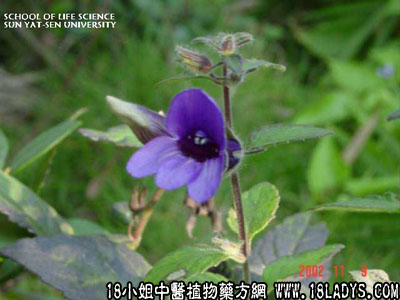

别名：大驳骨丹。
植物名：黑叶爵床。
生长环境：本品为直立、常绿灌木。为一种栽培植物，多见于村中或园圃内。
分布：广东以广州较多。
入药部分：枝、叶。
采集期：夏、秋。
自采地点：山岗。
性味：性平、味淡。
功能：散瘀、消肿。
主治、用量和用法：跌打：干用5钱至1两、清水煎，冲酒服，或为末酒煮外敷患处。
验方：（治跌打肿痛方）大还魂5钱、小还魂5钱、透骨消5钱、泽兰叶5钱、血见愁5钱、入地金牛根5钱、清水四碗、煎成一碗、冲酒服。为末调酒加热外敷。孕妇忌服。
（方解）本方为六味散瘀消肿药合成。入地金牛、泽兰兼能行气止痛、头骨消入骨骼消瘀积，血见愁兼凉血散瘀，组成行气止痛，凉血消肿之剂。治跌打受伤瘀肿甚验。
（方歌）跌打瘀肿大小魂，血见愁入金牛根，透骨泽兰冲酒服，为末酒敷法亦珍。
参开资料：《广州常用草药验方集解》荔湾区人民医院治疗跌打经验方：大还魂20斤、田基黄20斤、薄荷10斤、威灵仙10斤、石菖蒲10斤、无名异20斤、土黄柏10斤、金牛皮20斤、千打捶10斤、樟木皮30斤、泽兰20斤、旱莲草10斤、荆芥10斤、宽筋藤20斤、鹅不食10斤、鸡骨香20斤、六耳苓10斤、紫荆皮20斤、骨碎补10斤、刘寄奴20斤，共为细末，用水或酒煮成膏状，热敷伤处。
（方解）本方刘寄奴行气活血，泽兰、千打捶、鸡骨香、金牛、鹅不食去瘀生新，千打捶止痛，菖蒲、薄荷、荆芥、灵仙祛风通窍，樟木皮、六耳茯、旱莲消肿止血、且入肾经，乌须固齿，可推想其对骨伤有一定作用，加以无名异治金疮拼伤，大还魂、田基黄消肿散瘀，合成治疗跌打挫伤之有效方剂。在1961年元旦，该区中医工作展览会上，某医生总结有1764个病例，证明本方治疗跌打挫伤，有散瘀止痛作用。曾经广州市敬修堂制药厂重新将此方制为成药，经该区人民医院使用，疗效甚佳。
（方歌）跌打挫伤痛难当，大还魂共田基黄，薄荷灵仙无名异，黄柏打捶樟木藏，泽兰旱莲荆芥入，六耳宽筋碎补匡，鸡骨香含菖蒲草、紫荆金牛刘寄奴，鹅不食同为细末，热敷水煎痛即安。
《广东省中医验方交流汇编》内载：治正骨方：大还魂、小还魂、大幌伞、上山虎、落山虎、金不换、千斤拔、满天星、牛不食、大刀王、过骨力、丁桂草、透骨消，各等分，将上药叶为末可治血，共头根可驳骨，九断骨要用生鸡仔一只，去头足内脏，取肉捶烂，连药加酒用锅炒过敷伤处，24小时即把药除去，第二次用药时，不用生鸡仔，以面粉和药敷患处，消肿后，以追风膏贴之，九断手加桂枝，断脚加牛七、较骨加松节。